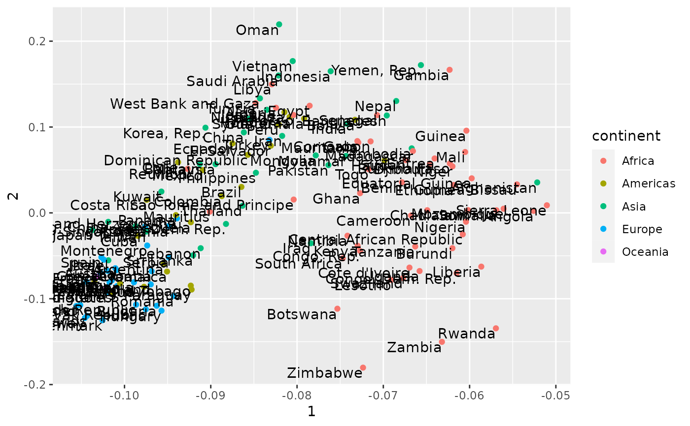

This is useful for dimensionality reduction of items, especially when setting a lower nv.
Usage
widely_svd(tbl, item, feature, value, nv = NULL, weight_d = FALSE, ...)
widely_svd_(tbl, item, feature, value, nv = NULL, weight_d = FALSE, ...)Arguments
- tbl
Table
- item
Item to perform dimensionality reduction on; will end up in
itemcolumn- feature
Column describing the feature that links one item to others.
- value
Value
- nv
Optional; the number of principal components to estimate. Recommended for matrices with many features.
- weight_d
Whether to multiply each value by the
dprincipal component.- ...
Extra arguments passed to
svd(ifnvisNULL) orirlba(ifnvis given)
Value
A tbl_df with three columns. The first is retained from the item input,
then dimension and value. Each row represents one principal component
value.
Examples
library(dplyr)
library(gapminder)
# principal components driving change
gapminder_svd <- gapminder %>%
widely_svd(country, year, lifeExp)
gapminder_svd
#> # A tibble: 1,704 × 3
#> country dimension value
#> <fct> <int> <dbl>
#> 1 Afghanistan 1 -0.0522
#> 2 Albania 1 -0.0949
#> 3 Algeria 1 -0.0824
#> 4 Angola 1 -0.0526
#> 5 Argentina 1 -0.0955
#> 6 Australia 1 -0.103
#> 7 Austria 1 -0.101
#> 8 Bahrain 1 -0.0913
#> 9 Bangladesh 1 -0.0696
#> 10 Belgium 1 -0.102
#> # … with 1,694 more rows
# compare SVDs, join with other data
library(ggplot2)
library(tidyr)
gapminder_svd %>%
spread(dimension, value) %>%
inner_join(distinct(gapminder, country, continent), by = "country") %>%
ggplot(aes(`1`, `2`, label = country)) +
geom_point(aes(color = continent)) +
geom_text(vjust = 1, hjust = 1)
